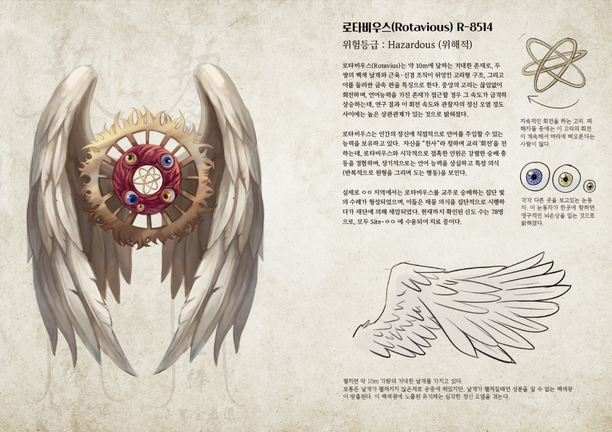
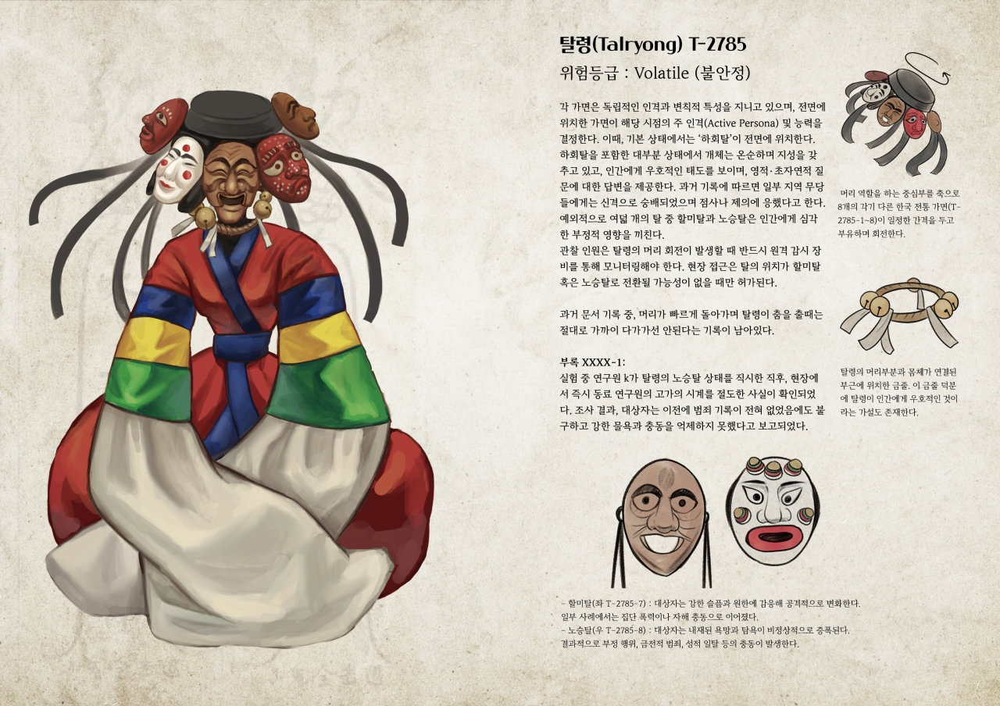
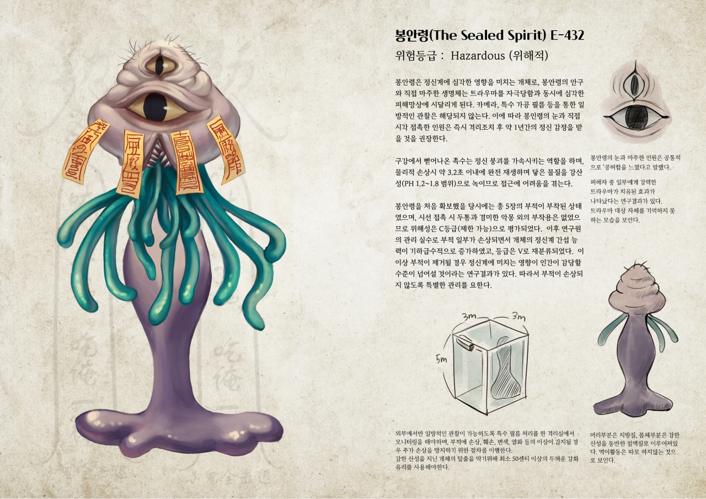
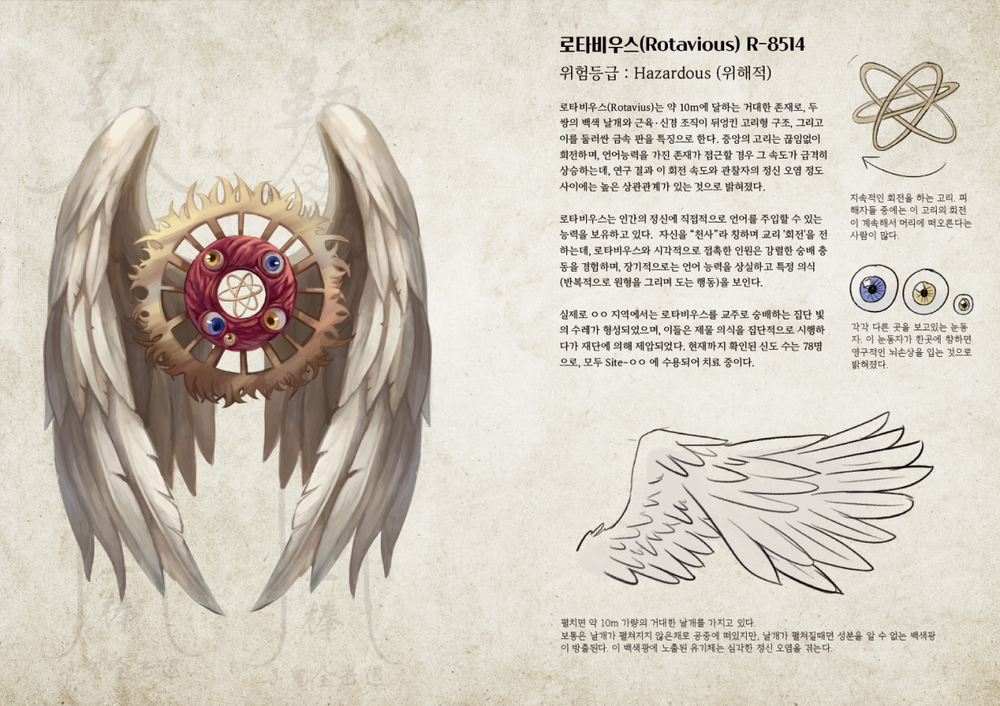
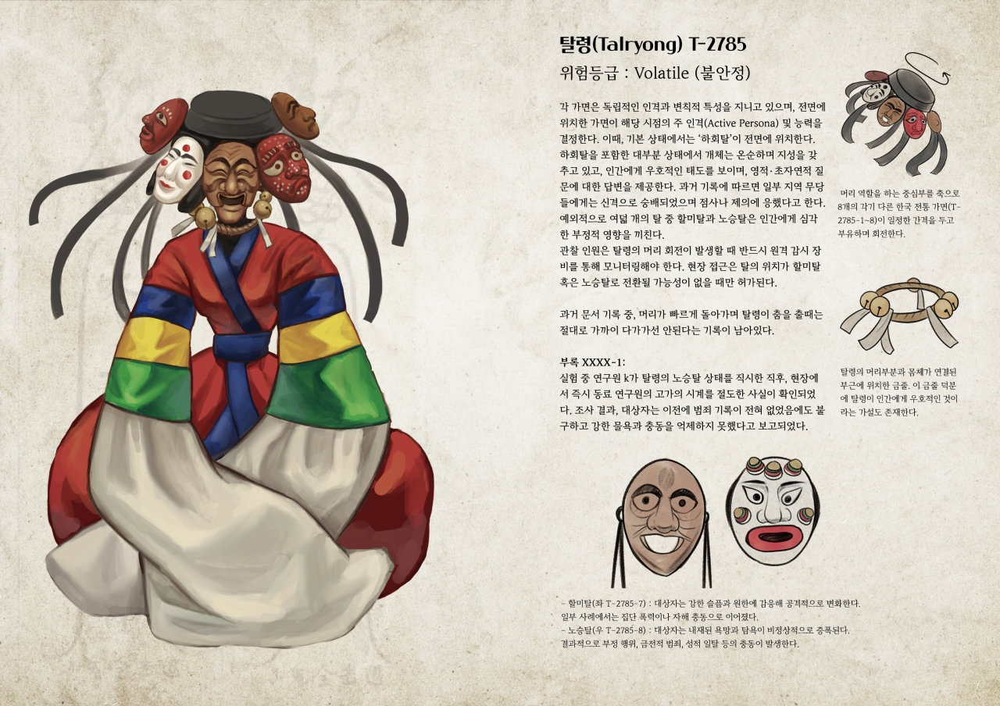
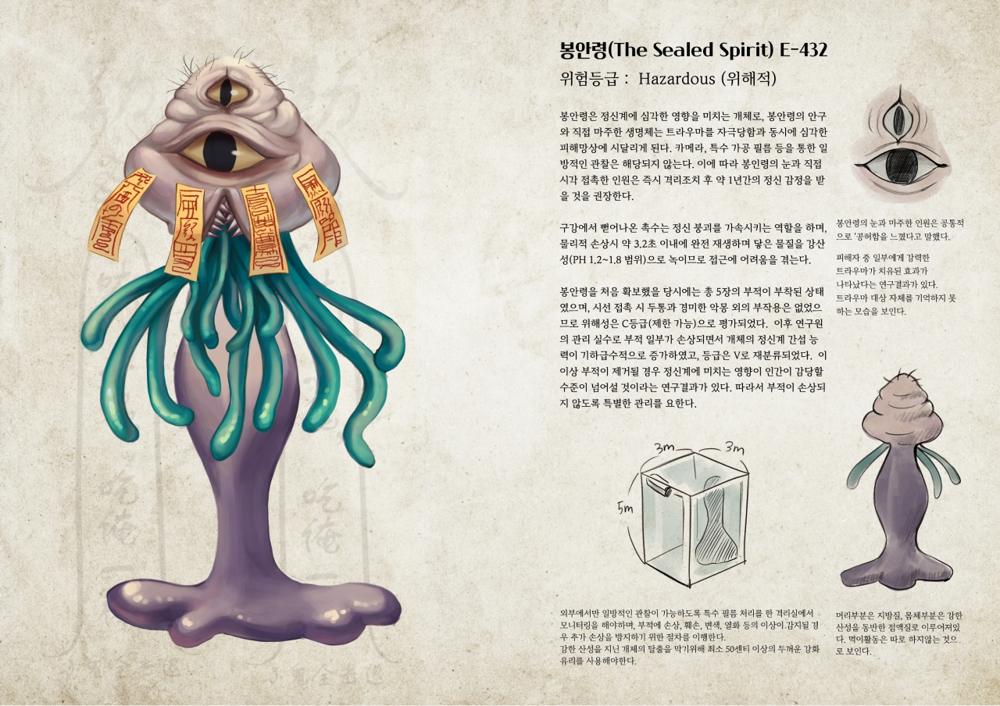
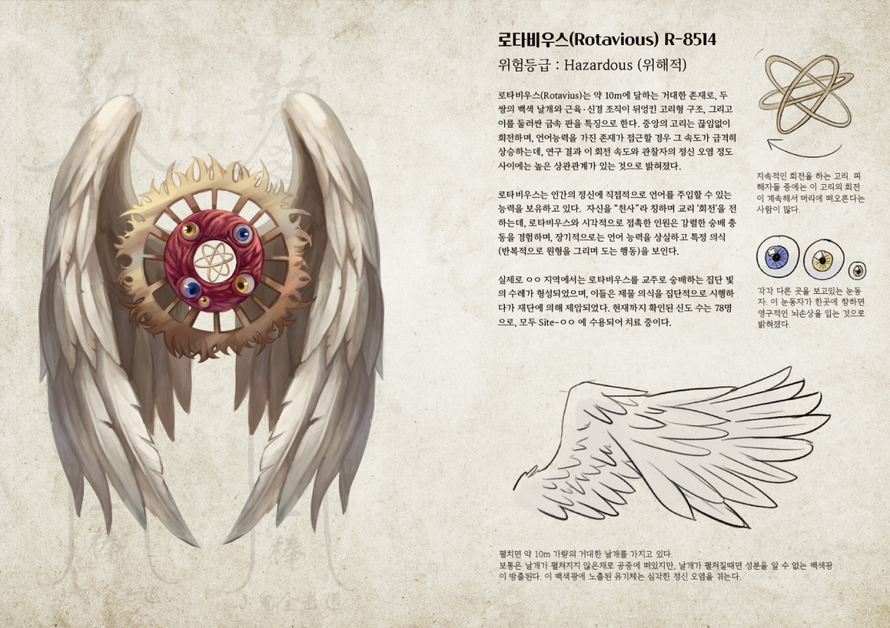
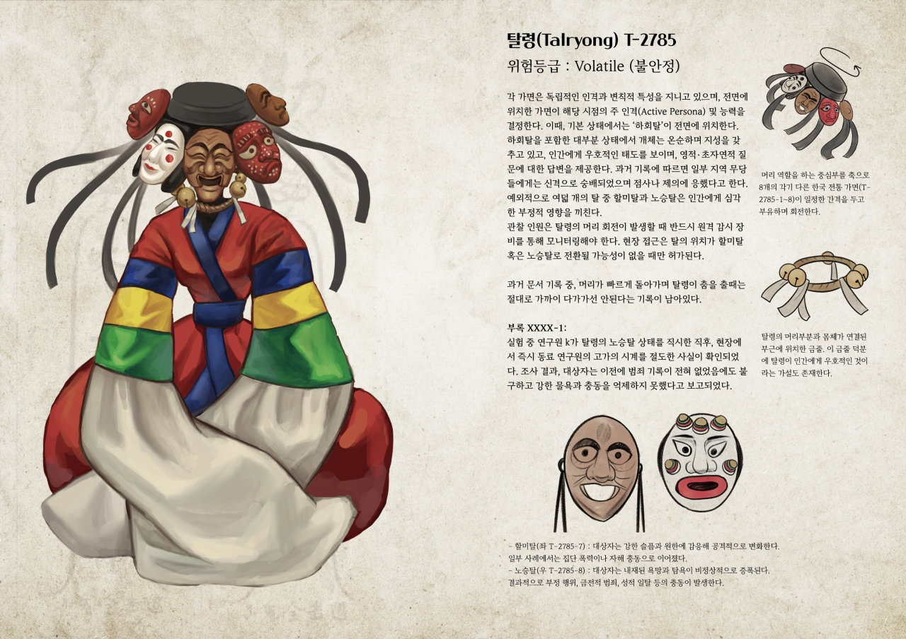
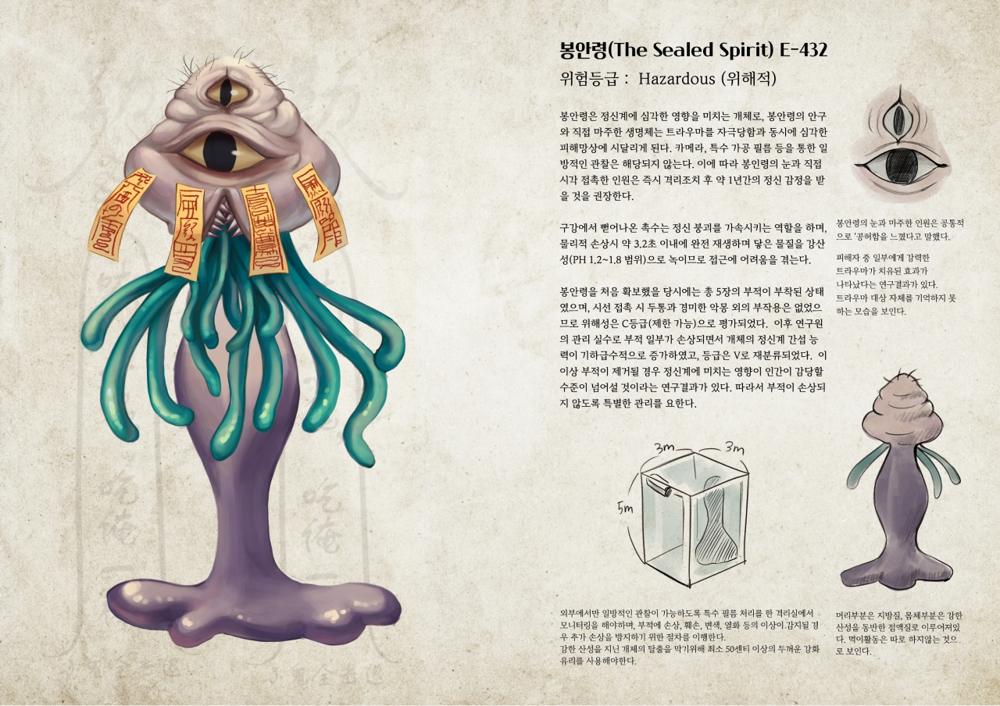

2025ⓒSeoul National University of Science and Technology.All Rights Reserved.

언캐니 아카이브
Uncanny Archive
황수빈
인간은 ‘알 수 없음’ 앞에서 두려움을 느끼며, 그 빈자리를 메우기 위해 다양한 크리처들을 상상해왔습니다. Uncanny Archive는 버려진 실험실에서 발견된, 이 기묘한 존재들에 관한 연구 기록을 모아 엮은 자료집입니다.



2025ⓒSeoul National University of Science and Technology.All Rights Reserved.